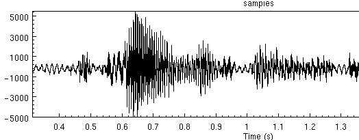
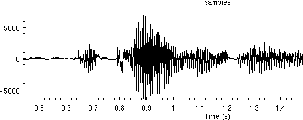

| Building Synthetic Voices | ||
|---|---|---|
| <<< Previous | Basic Requirements | Next >>> |
Although the best recording conditions can't probably be achieved recording directly to a computer (under Unix or some other operating systems). We accept that in many cases recording directly to a computer has many conveniences outweighing its disadvantages.
The disadvantages are primarily in quality, the electromagnetic noise generated by a machine is large and most computers have particularly poor shielding of there audio hardware such that noise always gets added to the recorded signal. But there are ways to try to minimize this. Getting better quality sound cards helps, but they can be very expensive. "Professional" sound cards can go for as much as a thousand dollars.
The advantage of using a computer directly is that you have much more control over the recording session and first line processing can down at record-time. In recent years we found the task of transferring the recorded data from DAT tapes to a computer, and splitting them into individual files, even before phonetic, labeled a significantly laborious task, often larger and resource intensive than the rest of the voice building process. So recently we've accept that direct recording to disk using a machine worthwhile, except for voices that require the highest quality (and when we have the money to take more time). This section describes the issues in recording under Unix, though they mostly apply under Windows too if you go that route.
The first thing you'll find out about recording on a computer is that no one knows how to do it, and probably no-one has actually used the microphone on the machine at all before (or even knows if there is a microphone). Although we believe we are living in a multi-media computer age, setting up audio is still a tricky thing and even when it works its often still flakey.
First you want to ensure that audio works on the machine at all. Find out if anyone has actually heard any audio coming from it. Even though there may be an audio board in there, it may not have any drivers installed or the kernel doesn't know about it. In general, audio rarely, "just works" under Linux in spite of people claiming Linux is ready for the desktop. But before you start claiming Windows is better, we've found that audio rarely "just works" there too. Under Windows when it works its often fine, but when it doesn't the general Windows user is much less likely to have any knowledge about how to fix it, while at least in the Linux world, users have more experience in getting recalcitrant devices to come to life.
Its difficult to name products here as the turn over in PC hardware is frantic. Generally newer audio cards wont work and older card do. For audio recording, we only require 16bit PCM, and none of the fancy, FM synthesizers and wavetable devices, those are irrelevant and often make card difficult or very hard to use. Laptops are particular good for recording, as they generally add less noise to the signal (especially if run on the battery) and they are portable enough to take into a quite place that doesn't have desktop cooling fan running in the background. However sound on Laptops under Unix (Linux, FreeBSD, Solaris etc) is unfortunately even less likely to work, due to leading edge technology and proprietary audio chips. Linux is improving in this area but although we are becoming relatively good at getting audio to work on new machines, its still quite a skill.
In general search the net for answers here. Linux offers both ALSA and the Open Sound drivers drivers which go a long way to help. Note though even when these work there may be other problems (e.g. on one laptop you can have either sound working or suspend working but not both at once).
To test audio you'll need something to modify the basic gain on the audio drivers (e.g. xmixer under Linux/FreeBSD, or gaintool under Solaris). And you can test audio out with the command (assuming you've set ESTDIR}
which should play a US male voice saying "She had your dark suit in greasy washwater all year."$ESTDIR/bin/na_play $ESTDIR/lib/example_data/kdt_001.wav
To test audio in you can use the command
where the time given is the number of seconds to record. Note you may need to change the microphone levels and/or input gain to make this work.$ESTDIR/bin/na_record -o file.wav -time 3
You should look at the audio signal as well as listen to it. Its often quite easy to see noise in a signal than hear it. The human ear has developed so that it can mask out noise, but unfortunately not developed enough to mask all noise in synthesis. But in synthesis when we are going to concatenated different parts of the signal the human ear isn't as forgiving.
The following is a recording made with background noise, (probably a computer).

Example waveform recorded with lots of background noise

Example waveform recorded in clean environment
Under Linux there is a Audio-Quality-HOWTO document that helps get audio up and running. AT time of writting it can be found http://audio.netpedia.net/aqht.html
| <<< Previous | Home | Next >>> |
| Who owns a voice | Up | Extracting pitchmarks from waveforms |